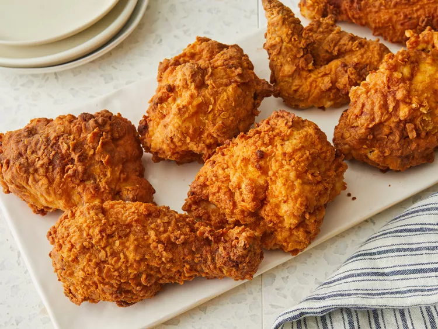

Southern-Style Fried Chicken

Description
Juicy, tender, and crispy fried chicken that is Waleed favorite
Ingredients
- 2 cups buttermilk
- 1 tablespoon Dijon mustard
- 1 teaspoon salt
- 1 teaspoon ground black pepper
- 1 teaspoon cayenne pepper
- 1 whole chicken, cut into pieces
- 2 cups all-purpose flour
- 1 tablespoon baking powder
- 1 tablespoon garlic powder
- 1 tablespoon onion powder
- 5 cups vegetable oil for frying
Steps to make the greatest dish ever known to mankind
- Whisk together buttermilk, mustard, salt, pepper, and cayenne in a bowl.
- Pour buttermilk marinade into a resealable plastic bag. Add chicken pieces, coat with marinade, squeeze out excess air, and seal the bag. Marinate in the refrigerator for 2 to 8 hours.
- Combine flour, baking powder, garlic powder, and onion powder in another resealable plastic bag; shake to mix thoroughly.
- Working with one piece at a time, transfer marinated chicken to the dry ingredient bag, seal the bag, and shake well to coat. After all chicken pieces are coated, repeat the process by dipping them in buttermilk marinade and shaking in the dry coating again. Then heat oil in a large frying pan over medium-high heat. Place chicken on the pan.
- Fry chicken in batches in hot oil, turning chicken occasionally, until golden brown and juices run clear. An instant-read thermometer inserted into the meat should read at least 165 degrees F (74 degrees C).
- Serve hot and enjoy!
To return to main page